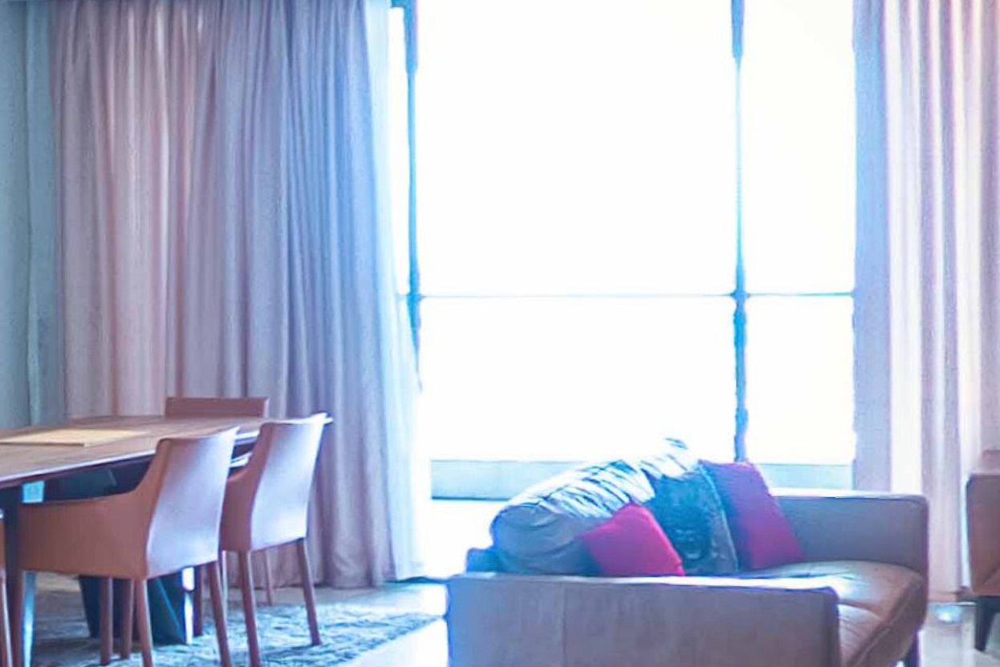

Challenge
We were handed a recovered two-speaker phone call and a single photo of a living room. Imani taunts Dayo with riddles about where she lives, and the flag has to be built from what the clues give up:
hiCTF{Development_City_Country_Agency_Room}The transcript, lightly trimmed:
Imani: You always ask how I sleep this close to the water. I don't. I count. The summer Athens lit its flame, the ground under this carpet was still open sea, and it stayed that way for years. I checked from orbit. Orbit doesn't flatter.
Dayo: So it's Dubai. It's always Dubai.
Imani: Dubai wouldn't let me face the Atlantic. My clock matches Paris in winter and ignores the summer. That is true of more places than you'd like. Rule out the cheap ones before you brag.
Dayo: Who made the ground?
Imani: Dredgers showed up half a year before Beijing's cauldron. The planners promised seven years of dredging. The wall guarding me is stacked from five-ton concrete blocks, cast beside the water. The old public beach is somewhere under my feet.
Dayo: And who gave you the keys?
Imani: Not a hotel. A small office that sells homes, tucked inside a cluster of towers named for five gems that never touched an oyster. Find the office. Then find my room the way you'd find a bad memory: by the furniture. The plate by the door is the only honest thing about it.

Solution
Step 1 - The reclaimed city
Every clue is a date or a construction detail, and they all point at one land-reclamation project:
- Still open sea "the summer Athens lit its flame": the Athens Olympics were 2004, so the ground did not exist yet.
- Dredgers "half a year before Beijing's cauldron", seven-year plan: Beijing opened in August 2008, so dredging started around February 2008 on a seven-year programme.
- A wall of five-ton concrete blocks cast on site: the sea revetment's accropode armour units, each made on site at 5 tons.
- "The old public beach is under my feet": the project was built over Bar Beach.
That is Eko Atlantic, the reclaimed city in front of Bar Beach in Lagos, Nigeria. The time-zone jab confirms it: a clock that "matches Paris in winter and ignores the summer" is UTC+1 all year with no daylight saving, which is Nigeria, and is exactly what rules out Dayo's Dubai (UTC+4, and not on the Atlantic).
Eko Atlantic, Lagos, NigeriaStep 2 - The towers
"A cluster of towers named for five gems that never touched an oyster" is the Eko Pearl Towers, five residential towers named Black, White, Champagne, Indigo and Aqua Pearl. The dredging dates and the five pearls line up, so the apartment is somewhere in that complex.
Step 3 - The agency
Imani says the keys came from "not a hotel, a small office that sells homes" inside the towers. On Google Maps the pin at the Eko Pearl Towers address (CC56+P3P, Pearl Boulevard) now reads Buchi Obasi Hq and is miscategorised as a jewelry store, which is a rename. The 360 degree tour attached to that pin (uploaded Jan 2022) still carries the original business name on the overlay: Nairahomes Realty.
The challenge wants the original name, which is the one preserved in the tour, not the renamed pin.
Step 4 - The room, by the furniture
"Find my room the way you'd find a bad memory: by the furniture." The tour and the agency's listing photos include the exact living room from the attachment: same long wooden dining table, tan leather chairs, grey sofa with a red cushion, patterned rug and full-height glazing. Following the tour to the unit's front door, the plate reads floor 3, door C.
Agency: Nairahomes Realty Room: 3CFlag
hiCTF{Eko-Atlantic_Lagos_Nigeria_Nairahomes-Realty_3C}Takeaways
- Treat each riddle line as one constraint. Olympic years, a rival megaproject's opening, armour-block weights and a no-DST time zone each eliminate candidates until only one city is left.
- A renamed Google Maps pin still leaks its past. Old 360 degree tours, uploaded photos and reviews often keep the original business name after the listing is re-branded.
- When a photo is the key, match the furniture, not the vibe. The same unit's listing gallery and virtual tour carried the shot straight to the door plate.